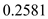
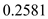
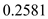
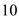

Write the formula for trans-conductance gm .
 .
.
Substitute for  and  for
and  for  in the equation.
in the equation.
Thus, trans-conductance of the amplifier  is .
is .
Write the formula for overdrive voltage.
The differential circuit is biased with a current source
An output resistance .
Drain resistance .
Transistor parameter
Substitute corresponding values in the equation.
Here the output is taken differentially and there is a mismatch of 1% between the drain resistances. So,
Write the formula for trans-conductance gm .
.
Substitute for and  for in the equation.
Thus, trans-conductance of the amplifier is .
Write the formula for differential gain  .
.
Substitute for  and for
and for  .
.
Thus, differential gain of the amplifier  is .
is .
Write the expression for common mode gain  .
.
Substitute  for  and 100 for
and 100 for  in the equation.
in the equation.
Thus, common mode gain  is .
is .
Write the formula for common mode rejection ratio.
Substitute for and for  in the equation.
in the equation.
Thus, common mode rejection ratio is.